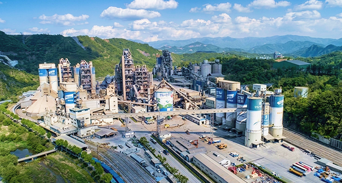
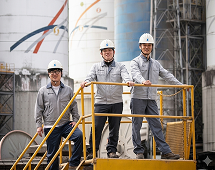
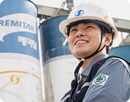
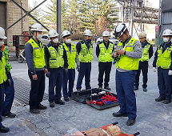

안전보건경영
임직원과 협력사 근로자의 생명과 안전을 최우선으로 하는 안전경영을 실천합니다.
한일시멘트는 선진 안전보건 경영 시스템과 행동기반 안전관리, 스마트 기술을 통해 사고 없는 현장을 만들어갑니다.

안전보건 경영시스템
-
01
KOSHA MS 인증
선진 안전·보건 경영 시스템을 구축하여 안전보건공단의 KOSHA MS 인증을 취득했습니다.
-
02
SF100
행동기반 안전관리 규정과 절차로 작업자의 불안전행동을 데이터로 취합·개선합니다.
-
03
IoT 스마트 안전관리
뉴노멀 시대에 맞춰 IoT 신기술 기반 스마트 안전관리 플랫폼을 도입합니다.
추진전략과 과제
기본에 충실하면서도 중장기적인 실행 방안과 역량 확보를 통해 뉴노멀 시대 안전관리 패러다임을 구축합니다.
-
안전리더십 행동강령
DCOM 기반 10대 행동요인을 기초로, 계층별 안전리더십 행동강령 10개씩을 제정했습니다.
-
HSGRs
Hanil Safety Golden Rules
절대 지켜야 할 행동기반 안전규정으로, 현장의 불안전 행동을 원천적으로 예방합니다.
-
SF100 절차
사업장별 맞춤 안전보건경영시스템
시멘트·레미탈·슬래그·레미콘 각 사업장 공정 특성에 맞춘 안전관리 절차를 운영합니다.
안전보건활동 4가지
안전관리 거버넌스를 중심으로, 현장 곳곳에서 실질적인 안전보건활동을 실천하고 있습니다.
-

01 안전보건조직 인력 운영상시근로자 500명 이상 사업장에 안전·보건관리자 각 2명 이상 배치
-

02 안전 캠페인 실시전 사업장 대상 정기안전문화캠페인 운영
-
03
합동안전점검 실시
화재 우려지역 대상 합동 안전점검 정례화
-

04 긴급구조훈련 실시비상상황 대비 긴급구조훈련 정기 실시